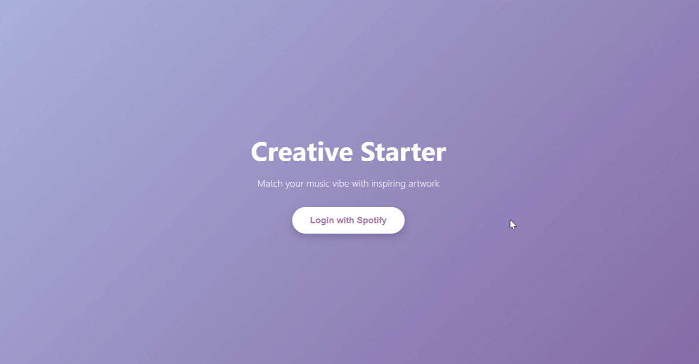
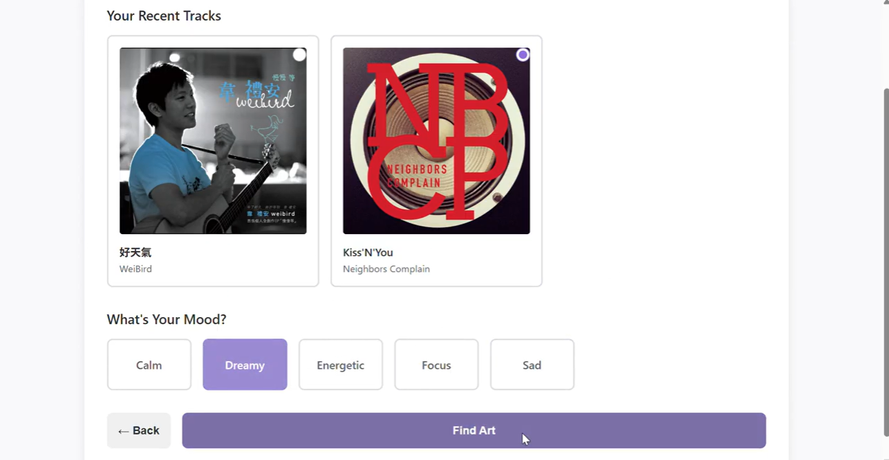
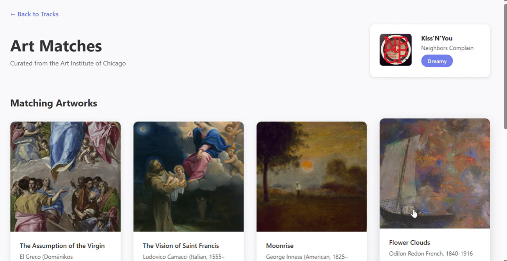

‹ Back to Work
‹ Back to Work
01
Creative Starter
Exploring art through music and mood
Project Overview
Starting with a Song
I often turn to music when I'm drawing or looking for ideas. For my HCDE 310 final project, I wanted to explore whether music could also help me discover visual inspiration.
I built Creative Starter, a web application that connects Spotify's recently played tracks with the Art Institute of Chicago's collection. Users select a song and a mood, then browse artworks related to that mood.

02
Design & Development
From Music to Art
After signing in with Spotify, users choose a recently played song and one of five moods. I kept both selections on the same screen and let users choose the mood themselves instead of having the application assign one based on their music.
The results page displays up to six artworks, with the selected song and mood still visible for context.

Building with Two APIs
I built the application with Python and Flask. The selected mood determines which keywords are used to search the museum's collection. I also added filtering to remove duplicate tracks and exclude artworks without usable images.
Getting Spotify authentication to work took more time than I expected. Some artwork searches also returned incomplete data or no usable results, so I had to adjust how the application handled those cases.

03
Reflection
What I Learned
Creative Starter was my first experience combining two external APIs in one application. It taught me how to work with authentication, API responses, and data that doesn't always come back as expected.
The main limitation is that the artwork search depends on mood keywords rather than the musical characteristics of the selected song. If I continued developing it, I'd explore a closer connection between the music and the artwork, and see whether the results actually help people start a creative task.